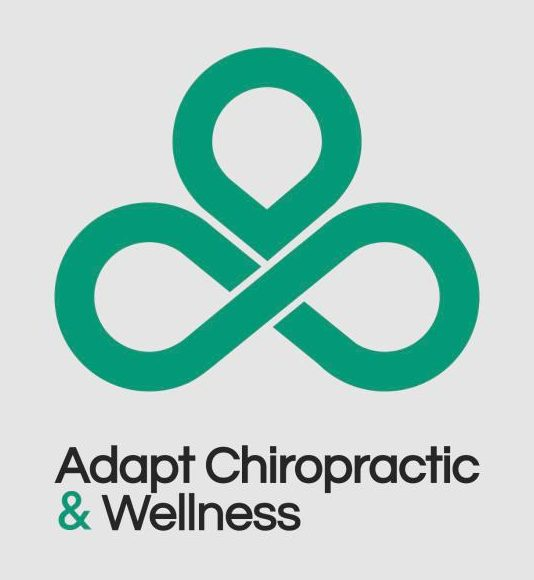
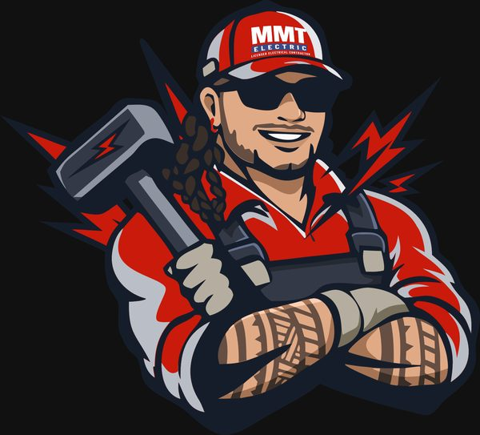
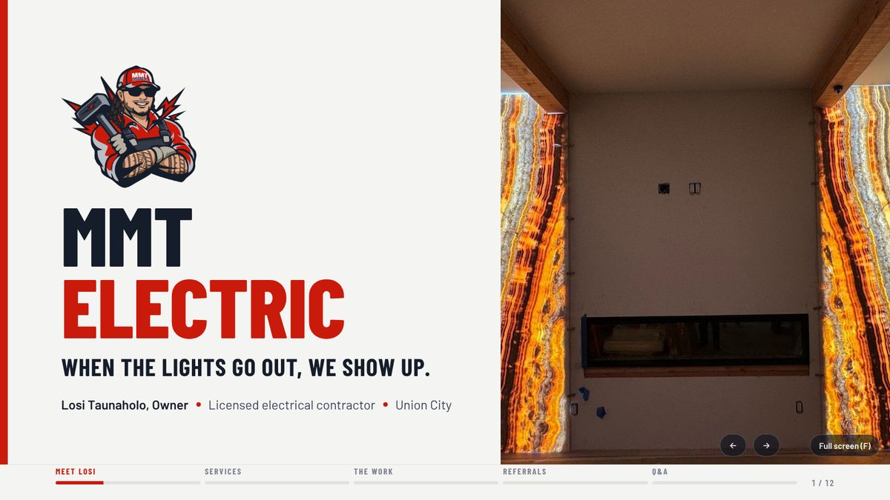

The website is the first meeting nobody gets to show up for. It has to back up your referral.
🔍 roofer near me
Outdated Roofing Co.
★★★☆☆
Your Referral
★★★★★
Some Directory Listing
★★★★☆
No-website Guy
Kaizen · BNI Feature03
The differenceWebsite designer vs. Kaizen
Most designers hand you a website. I make every piece work together.
What you get
Typical designer
Kaizen
A good-looking website
✓
✓
Copy written in your voice after a 1-hour interview
—
✓
Google profile, reviews and local SEO connected
—
✓
Cards, flyers and trucks that match the site
—
✓
Every lead lands in your CRM and gets followed up
—
✓
A monthly report and a plan for what's next
—
✓
KaizenYour marketing pieces, clicked into place.
Kaizen · BNI Feature04
The big ideaFive stages of a website
Your website should grow up with your business.
Business grows
Stage 1
Landing page
Who you are, what you do, call now.
"I just started"Motor Body · Alongi
Stage 2
Funnel
One offer, one path from click to call.
"I need leads"Promos, estimates, QR flyers
Stage 3
Local SEO site
A page for every service and every city.
"I want to be found"Johnny Windows · Silicon Pro
Stage 4
Authority site
Your story, team, reviews and proof.
"I'm the go-to"Falcon Roofing · Sunwest
Stage 5
Connected
Site + CRM + follow-up + monthly reporting.
"I'm scaling"Adapt Chiropractic
Kaizen · BNI Feature05
The workLive sites, South Bay businesses
Real sites for real local businesses.
adaptchiropracticwellness.com
Adapt Chiropractic & Wellness Campbell
sunwestpainting.net
Sunwest Painting San Jose
siliconproplumbing.com
Silicon Pro Plumbing Sunnyvale
mmt-electric.com
MMT Electric Union City
johnnywindows.com
Johnny Windows San Jose
mrs-cleaning.com
Mrs. Cleaning Redwood City
Kaizen · BNI Feature06
Get foundBuilt for local search
Google ranks pages, not businesses.
A page for every service you sell and every city you serve, so you show up for what people actually type.
109pages mapped for Silicon Pro Plumbing's site plan
Google + AIbuilt for Search, Maps and AI answers
Example: Johnny Windows site map07
ProofReporting every month
I don't just launch it. I measure it and improve it.
~6×
Google impressions in 9 months About 5K a month to over 30K (Oct '25 to Jul '26)
18→14
Average Google position Improved even while moving to a new domain
+4,022%
Impressions on one new page The sciatica page, part of a condition-page cluster
Adapt Chiropractic & Wellness · live Kaizen report08
Follow-upWhere money leaks
Most businesses don't need more leads. They need to stop losing them.
12
homeowners asked a 35-year roofing client for a quote online and never reached the CRM
117
website form entries sitting unread in the inbox
1
recovered re-roof pays for months of marketing
The fixEvery Kaizen site is built to end here
0 min
Form filled
Quote request from the site
Instantly
Into your CRM
Housecall Pro, Jobber, yours
1 min
Text back
"We'll call you shortly"
Day 2 · Day 5
Follow-up
Goes out on its own
After the job
Review ask
Happy customer, 5 stars
Client details kept private09
BrandingBefore the website, the brand
Look like the reputable business you already are.
Logo + all filesBrand guideBusiness cardsTrifoldsEvent flyersDoor hangersTruck decalsShirtsBNI decks
Every brand guide sets fonts, colors, tone and feeling, so the website, the truck and the business card all feel like one company.
Adapt · event flyer

Adapt · new logo

MMT · mascot
Sunwest · cards

MMT · BNI deck
Kaizen · BNI Feature10
How I workOnboarding interview
The way it feels talking to you is how your site should feel.
1 hour
with the owner, before a single page is designed
Your storyHow did you get started, and why do you still do this?
Your peopleWho's your favorite customer, and why?
Your edgeWhat do customers say about you that competitors can't claim?
"We show up when we say we will.""Treat every house like it's your mom's.""Family owned since day one.""Straight answers, clean work.""Clean job site, every time.""We show up when we say we will.""Treat every house like it's your mom's.""Family owned since day one.""Straight answers, clean work.""Clean job site, every time."
Your team's words, across the screen11
The question I getAbout AI
"Can't I just make my website with AI?" Yes. Then what?
AI makes the raw material. I make the decisions.
What your business needs next
What message makes your market trust you
Which pages, offers, proof and follow-up should exist
Whether it all works across your site, Google, email, print and sales
Holding it accountable and improving it every month
100+checks before a Kaizen site goes live
Phone number matches on every page, button and Google listing
Every form tested end to end, junk folder included
Old pages redirected so you keep your Google rankings
"Hide from Google" switched off on launch day
California privacy and cookie compliance set up
Tap-to-call tested on a real phone
From the Kaizen launch checklist12
All togetherCase study
adaptchiropracticwellness.com
Adapt Chiropractic & Wellness
Campbell, CA. From one chiropractor to five practitioners, with a rebrand, a new site and the systems behind it.
BrandNew name + logo
WebsiteRebuilt for local search
DomainMoved, rankings kept
CRMAutomations + cleanup
Email + textCampaigns monthly
GoogleBusiness Profile
PrintCards + flyers
SocialCarousels + graphics
ReportingLive + monthly
4 yearsand still growing together
Kaizen · BNI Feature13
My askWho to send my way
Established trades with a great reputation and a website that doesn't show it: roofing, painting, plumbing, electrical, landscaping, cleaning.
Outdated
"Our website is old. We've just never fixed it."
No calls
"I have a site, but it never brings me calls."
Growing
"We're rebranding, or adding a service or a city."
Leaking
"Leads come in and we can't keep up with follow-up."
KAIZEN AGENCY
Daisydaisy@kaizenagency.org(408) 710-6718kaizenagency.orgYour marketing pieces, clicked into place.


 Adapt · event flyer
Adapt · event flyer Sunwest · cards
Sunwest · cards